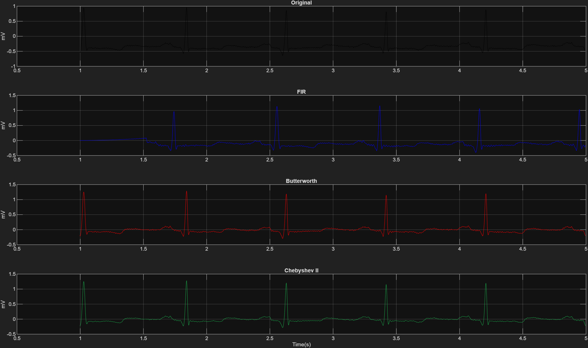
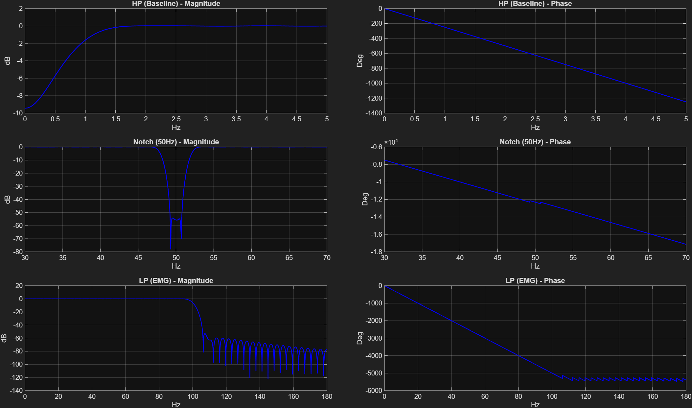
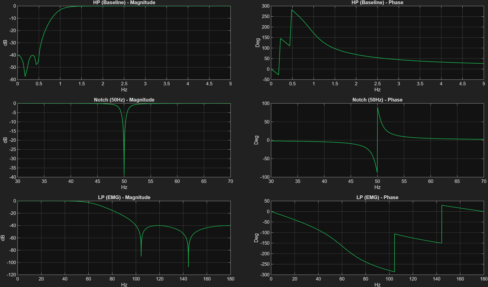
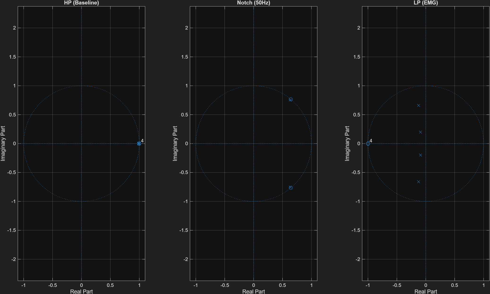
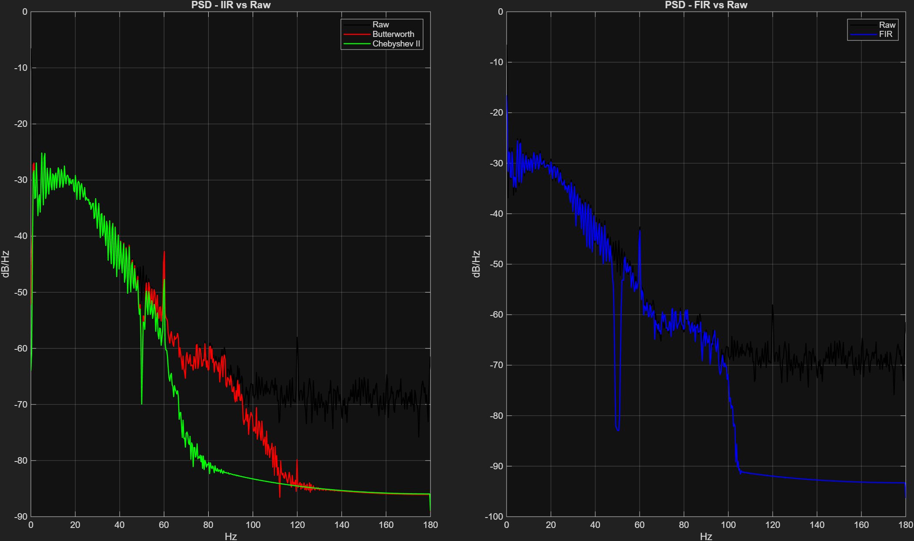

Let's start with the most intuitive plot: the time domain comparison. This shows the actual effect of our cascades on the medical data.

Expected: We theoretically expected the raw ECG to exhibit a low-frequency wandering baseline due to respiration (drifting far above and below 0mV), as well as high-frequency "fuzz" burying the QRS peaks due to 50Hz hum and EMG muscle noise. We expected our High-pass filter to re-center the signal exactly at 0mV, and our Low-pass/Notch filters to smooth out the fuzz without reducing the amplitude of the QRS spikes.
Found: The results perfectly align with expectations. Looking at the Black line (Raw), the signal severely drifts upwards around time = 2s to 4s. In the Blue (FIR), Red (Butterworth), and Green (Chebyshev) lines, this drift is completely eliminated—the signal is locked at 0mV. Furthermore, the thick, "hairy" appearance of the raw signal is replaced by crisp, sharp QRS complexes in the filtered versions. The Chebyshev Type II filter (Green) visibly preserved the sharpest peak amplitude, confirming its superiority for preserving essential clinical features.
To understand how the filters achieved the above result, we look at their Magnitude and Phase responses.

Expected: Because we used a Hamming window with a massive Order of 500, we expected a relatively sharp transition from passband to stopband. Most importantly, because it's an FIR filter, we mathematically expected the phase response to be perfectly linear (a straight line), guaranteeing zero phase distortion.
Found: As seen in the right panel, the phase response forms a perfect sawtooth pattern. This is a wrapped representation of a perfectly straight, linear line! The magnitude response shows a smooth, ripple-free passband (thanks to the Hamming window) and a decent stopband attenuation reaching around -60 dB. Exactly as expected.

Expected: We chose Chebyshev Type II to achieve a steeper cutoff than Butterworth, using a low Order of 4. Type II specifically forces the passband to be completely flat, while accepting mathematical "ripples" (bouncing) in the stopband. We expected the phase response to be highly non-linear.
Found: Look at the Lowpass filter's magnitude (bottom left). The passband (0 to 100 Hz) is completely flat at 0 dB, preserving the ECG perfectly. But once it drops into the stopband (past 100 Hz), the curve bounces up and down. These are the expected stopband ripples! The phase plot (right) is heavily curved and non-linear, which is why we MUST use the filtfilt command in our code to reverse this distortion.
Engineers analyze filter stability using the Z-PlaneThe Z-Plane (Pole-Zero Plot)A visual representation of a digital filter's complex math. A circle of radius 1 is drawn (the Unit Circle). 'O' represents a Zero. 'X' represents a Pole. For a filter to not explode, all Poles MUST be inside the Unit Circle..

Expected: For an Infinite Impulse Response (IIR) filter to be usable in a medical device, it must never become mathematically unstable. This means every single Pole (the denominator roots causing infinite gain) must sit strictly inside the unit circle (radius < 1). Zeros can be anywhere.
Found: Looking at Figure 9, the red unit circle acts as the boundary. We can see four 'X' marks. Every single 'X' is safely inside the circle, relatively close to the origin or the edge, but none touch or cross it. This proves our Butterworth design is mathematically stable and safe to process patient data.
Finally, we measure the absolute power of the noise before and after filtering using the Welch MethodWelch Method (PSD)A robust statistical way to estimate the power of a signal at different frequencies by breaking it into overlapping chunks and averaging them..

Expected: We expected the raw signal (black) to show a massive spike of energy at exactly 50 Hz due to European power grid interference. We expected our iirnotch filter (used in all cascades) to dig a deep "trench" at exactly 50 Hz to kill this spike. Furthermore, we expected a general drop in high-frequency energy (>100 Hz) due to our lowpass filters removing EMG noise.
Found: The results are breathtakingly precise. The black line features an enormous spike at 50 Hz. But trace the colored lines (our filtered signals): right at 50 Hz, they plunge violently downward, creating a massive V-shaped crater. This proves the Notch filter destroyed the 50 Hz hum entirely. Also, looking past 100 Hz, the colored lines sit far below the black line, proving the high-frequency EMG muscle noise was successfully suppressed.